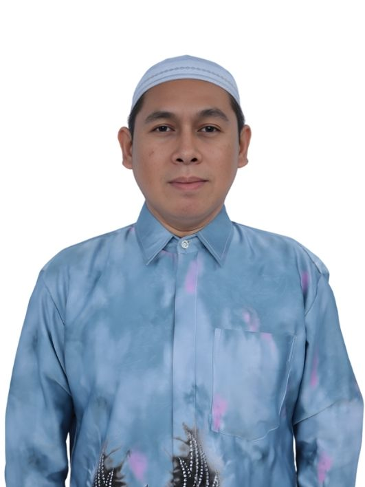
Rahman Ansyari, S.Pd
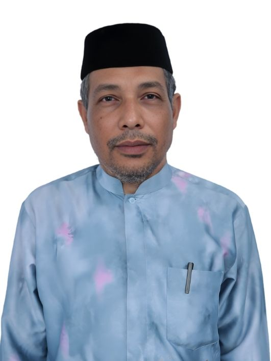
Anas, S.P
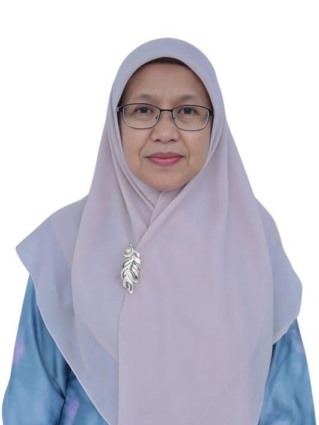
Rasmilawati, SE
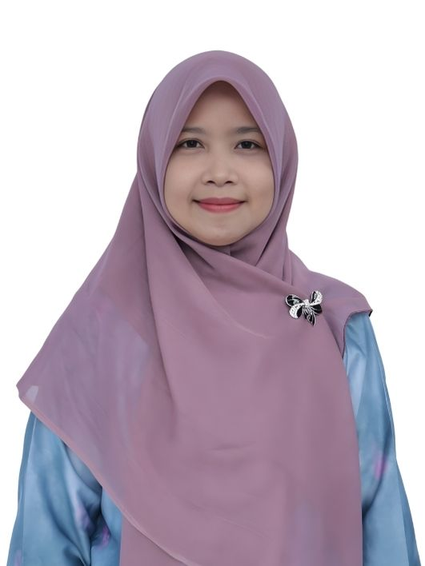
Nur Hikmah, S.Pd.I
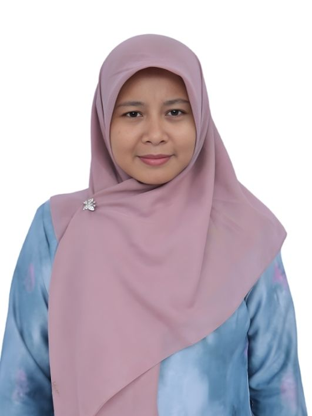
Dina Wahdiani, S.Pd
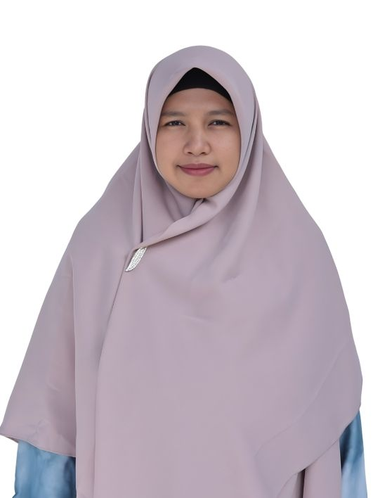
Helmah, S.Pd
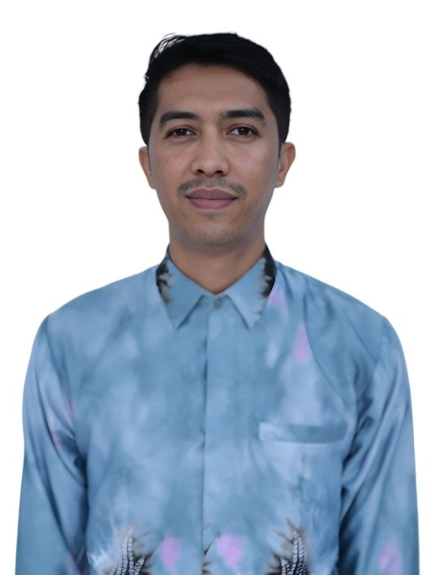
Abdul Rasyid, S.Pd.I
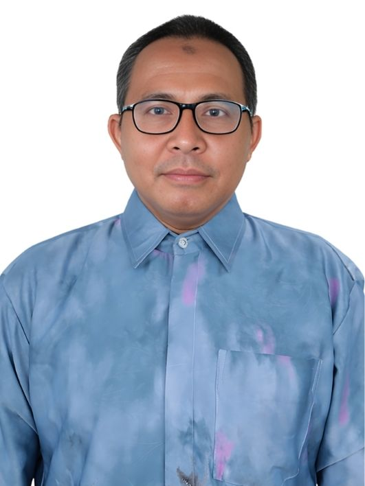
Suliman Bukhari, S.Pd
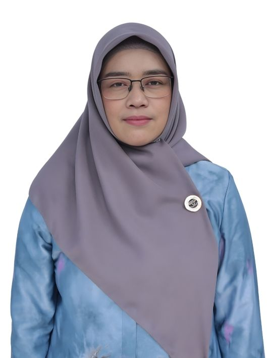
Fatmawati, S.Sos
M. Ridho, M.Pd
Sulthon Misfir, M.Ag
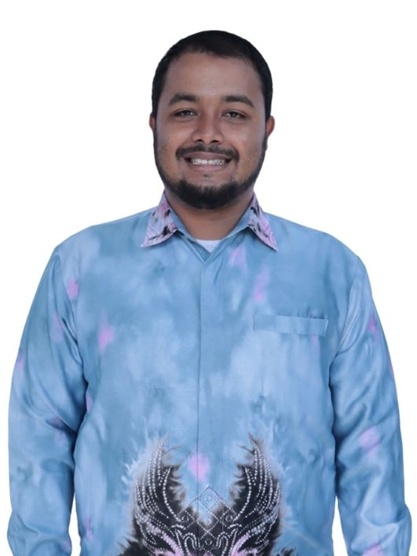
Saddat, S.Ag
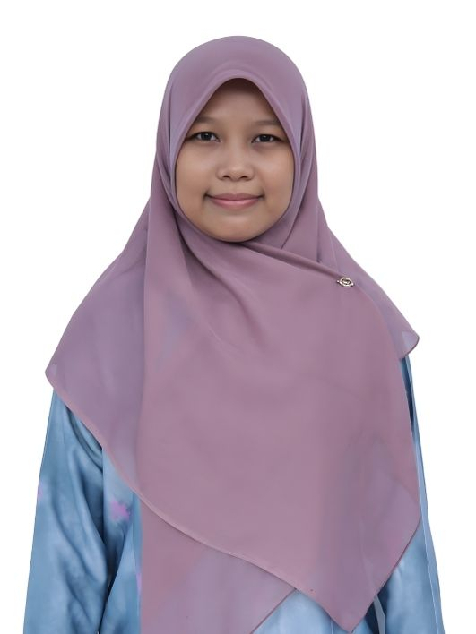
Laily Fadliah S.Pd.
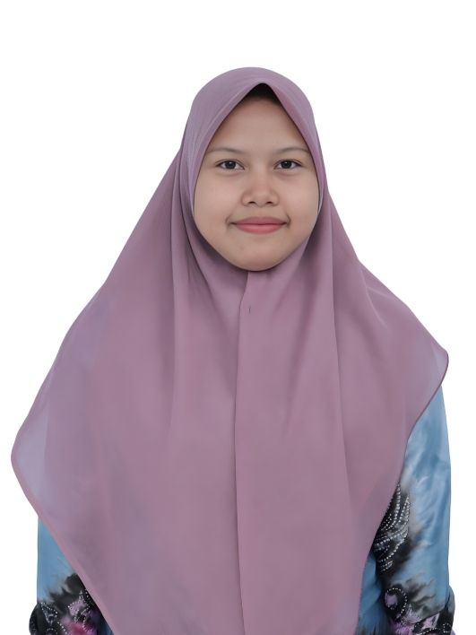